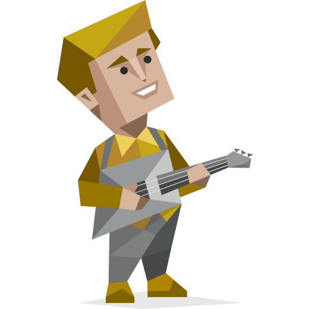

性格类型：
冒险家(ISFP-T)

作为一位 ENFJ型（主人公）个体，你散发出独特的魅力、同理心和理想主义，这让你在任何群体中都显得格外耀眼。你天生具备激励和引领他人的才能，与之相伴的是你内心深处的强烈愿望——对周围的世界产生积极的影响。你擅长洞察他人的情感和动机，往往在他人还未意识到自己的需求之前，你就已经敏锐地捕捉到了。
你的沟通技巧让你能够满怀激情和信念地阐述自己的愿景，吸引他人加入你的行列，并激励他们投身于你的事业。你在充满意义的人际互动中蓬勃发展，拥有激发周围人最大潜能的非凡能力。然而，当现实与你的高期望相去甚远时，你的理想主义天性有时会让你感到挫败。
性格特征：
@for (personality of personalities; track $index) {
}
{{ personality.title }}：
{{ personality.percent }} {{ personality.zhContent }}
{{ personality.options[0] }}
{{
personality.enOptions[0] === personality.enContent
? personality.value
: 100 - personality.value
}}
%
{{ personality.options[1] }}
{{
personality.enOptions[1] === personality.enContent
? personality.value
: 100 - personality.value
}}
%